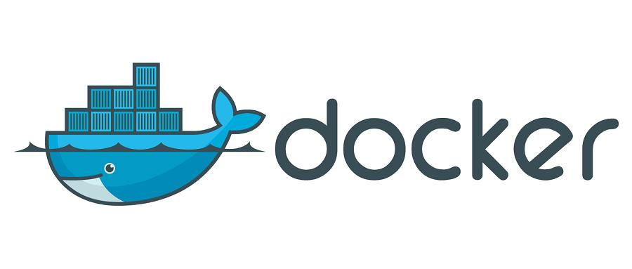

Docker
Docker
参考文档:💻 Docker 快速安装软件 - Docker 快速入门 - 易文档 (easydoc.net)
官方文档:Docker Documentation
官网:Docker
常见问题解决:
1 | # 容器 bash 没有 clear命令 |
也可以通过Dockerfile打包镜像,Dockerfile内容如下:
1 | FROM centos |
简介
Docker 是什么
Docker 是一个应用打包、分发、部署的工具
你也可以把它理解为一个轻量的虚拟机，它只虚拟你软件需要的运行环境，多余的一点都不要，
而普通虚拟机则是一个完整而庞大的系统，包含各种不管你要不要的软件。
跟普通虚拟机的对比
| 特性 | 普通虚拟机 | Docker |
|---|---|---|
| 跨平台 | 通常只能在桌面级系统运行，例如 Windows/Mac，无法在不带图形界面的服务器上运行 | 支持的系统非常多，各类 windows 和 Linux 都支持 |
| 性能 | 性能损耗大，内存占用高，因为是把整个完整系统都虚拟出来了 | 性能好，只虚拟软件所需运行环境，最大化减少没用的配置 |
| 自动化 | 需要手动安装所有东西 | 一个命令就可以自动部署好所需环境 |
| 稳定性 | 稳定性不高，不同系统差异大 | 稳定性好，不同系统都一样部署方式 |
打包、分发、部署
打包：就是把你软件运行所需的依赖、第三方库、软件打包到一起，变成一个安装包
分发：你可以把你打包好的“安装包”上传到一个镜像仓库，其他人可以非常方便的获取和安装
部署：拿着“安装包”就可以一个命令运行起来你的应用，自动模拟出一摸一样的运行环境，不管是在 Windows/Mac/Linux。

部署的优势
常规应用开发部署方式：自己在 Windows 上开发、测试 –> 到 Linux 服务器配置运行环境部署。
问题：我机器上跑都没问题，怎么到服务器就各种问题了
用 Docker 开发部署流程：自己在 Windows 上开发、测试 –> 打包为 Docker 镜像（可以理解为软件安装包） –> 各种服务器上只需要一个命令部署好
优点：确保了不同机器上跑都是一致的运行环境，不会出现我机器上跑正常，你机器跑就有问题的情况。
例如 易文档，SVNBucket 的私有化部署就是用 Docker，轻松应对客户的各种服务器。
通常用来做什么
- 应用分发、部署，方便传播给他人安装。特别是开源软件和提供私有部署的应用
- 快速安装测试/学习软件，用完就丢（类似小程序），不把时间浪费在安装软件上。例如 Redis / MongoDB / ElasticSearch / ELK
- 多个版本软件共存，不污染系统，例如 Python2、Python3，Redis4.0，Redis5.0
- Windows 上体验/学习各种 Linux 系统
重要概念：镜像、容器
镜像：可以理解为软件安装包，可以方便的进行传播和安装。
容器：软件安装后的状态，每个软件运行环境都是独立的、隔离的，称之为容器。
原理以及架构(待学)
Docker的三个概念
- 镜像（Image）：类似于虚拟机中的镜像，是一个包含有文件系统的面向Docker引擎的只读模板。任何应用程序运行都需要环境，而镜像就是用来提供这种运行环境的。例如一个Ubuntu镜像就是一个包含Ubuntu操作系统环境的模板，同理在该镜像上装上Apache软件，就可以称为Apache镜像。
- 容器（Container）：类似于一个轻量级的沙盒，可以将其看作一个极简的Linux系统环境（包括root权限、进程空间、用户空间和网络空间等），以及运行在其中的应用程序。Docker引擎利用容器来运行、隔离各个应用。容器是镜像创建的应用实例，可以创建、启动、停止、删除容器，各个容器之间是是相互隔离的，互不影响。注意：镜像本身是只读的，容器从镜像启动时，Docker在镜像的上层创建一个可写层，镜像本身不变。
- 仓库（Repository）：类似于代码仓库，这里是镜像仓库，是Docker用来集中存放镜像文件的地方。注意与注册服务器（Registry）的区别：注册服务器是存放仓库的地方，一般会有多个仓库；而仓库是存放镜像的地方，一般每个仓库存放一类镜像，每个镜像利用tag进行区分，比如Ubuntu仓库存放有多个版本（12.04、14.04等）的Ubuntu镜像。
安装
在Window中安装
桌面版：https://www.docker.com/products/docker-desktop
服务器版：https://docs.docker.com/engine/install/#server
配置镜像加速源

| 镜像加速器 | 镜像加速器地址 |
|---|---|
| Docker 中国官方镜像 | https://registry.docker-cn.com |
| DaoCloud 镜像站 | http://f1361db2.m.daocloud.io |
| Azure 中国镜像 | https://dockerhub.azk8s.cn |
| 科大镜像站 | https://docker.mirrors.ustc.edu.cn |
| 阿里云 | https:// |
| 七牛云 | https://reg-mirror.qiniu.com |
| 网易云 | https://hub-mirror.c.163.com |
| 腾讯云 | https://mirror.ccs.tencentyun.com |
在Linux中安装(重点):
视频教程:哔哩哔哩_bilibili
准备工作:
关闭防火墙:
1 | #关闭防火墙(临时关闭) |
关闭Selinux:
1 | #打开配置文件: |
安装wget
wget命令是Linux系统用于从Web下载文件的命令行工具，支持 HTTP、HTTPS及FTP协议下载文而且wget还提供了很多选项，例如下载多个文件、后台下载，使用代理等等，使用非常方便。
1 | yum install wget -y |
更换yum镜像源
1 | #进入下载源配置目录 |
安装一些工具
1 | #(按需安装) 安装vim编辑器和查询网卡的工具 |
设置stable镜像仓库
需要设置是因为yum软件源是没有docker
1 | #docker官网(不推荐) |
安装docker
1 | #安装docker |
普通用户免root运行docker
1 | #在普通用户在 |
配置阿里云镜像加速
需要到阿里云登陆账号:
1 | sudo mkdir -p /etc/docker |
镜像命令
常用命令:
注: [options] 表示可选命令参数, tag代表镜像的版本
可以通过hub.docker 查看详细的镜像以及版本号
1 | docker images #查看本地镜像列表 |
容器命令
注意: 以下所说的容器名其实写容器id也可以,不过多赘述
有镜像才能创建容器,这是前提
以下例子 用Nginx和CentOS演示:
1 | docker pull nginx #从仓库下载一个Nginx镜像 |
创建容器与配置
docker run [OPTIONS] image [COMMAND] [ARG...]
OPTIONS说明（常用）：有些是一个减号，有些是两个减号:
-i：以交互模式运行容器，通常与 -t 同时使用；
-t：为容器重新分配一个伪输入终端
上面两个一般配合使用,并且大部分情况下是必须的
-d: 后台运行容器并返回容器ID，也即启动守护式容器(后台运行),在大多数情况下,我们是希望Docker服务后台运行的
--name “容器名字” 给容器定义个名字,不写则随机生成
-p: 指定端口映射，小写p
-P: 随机端口映射，大写P
例子:
1 | #前台启动Nginx,开启端口映射 |
tips:
-v命令参数涉及到容器卷的概念:
容器卷
即将容器内部的文件路径与宿主机文件路径进行关联,(即每当容器或者宿主机关联的文件进行关联,修改其中一个,另一个也会改变)
我们将其操作称之为容器卷挂载
1 | docker run -it -v /宿主机绝对路径目录:/容器内目录 镜像名 |
查看数据卷是否挂载成功,通过docker inspect 容器ID查看容器细节
补充:
读写映射规则设置:
1 | #默认rw |
卷的继承和共享:
实现:
docker run -it --privileged=true --volumes-from 父类容器 --name 容器名 镜像
参数说明:
--privileged=true 用于解决文件权限问题
--volumes-from指定继承的父类容器
容器交互命令
退出容器
==当使用run进入容器后:==
使用快捷键:ctrl+p+q 或 ctrl +p ctrl q退出，容器不停止
输入命令: exit退出，容器停止
进入后台容器
1 | docker exec -it 容器ID bash #推荐使用 |
上述两者的区别:
exec 是在容器中打开新的终端，并且可以启动新的进程,用exit退出，不会导致容器的停止
attach 直接进入容器启动命令的终端，不会启动新的进程,用exit退出，会导致容器的停止。
容器与宿主机通信
容器->宿主机
docker cp 容器ID:容器内路径 目的主机路径
宿主机->容器
docker cp 宿主机路径 容器ID:容器内路径
更多命令
1 | docker ps [options] #查看正在运行的容器 |
容器导出与导入:
我们可以将自己的容器打包成一个镜像了,也可引入打包好的容器文件为作为一个镜像(包含被包的容器的所有数据)
docker export 容器ID > 文件名.tar
docker import 文件名.tar 镜像名:镜像版本号
部署常用软件
总体分二步:
- 搜索拉取镜像
- 创建容器
安装mysql
拉取好镜像后,启动mysql服务
1 | docker run -itd --name some-mysql -e MYSQL_ROOT_PASSWORD=设置的密码 -p 3306:3306 mysql:tag |
不过上述方案存在一个问题:即删除容器会导致数据丢失
实战部署
通过挂载mysql容器卷来实现数据解决上述问题
1 | docker run -d -p 3306:3306 --privileged=true -v /opt/mysql/log:/var/log/mysql -v /opt/mysql/data:/var/lib/mysql -v /opt/mysql/conf:/etc/mysql/conf.d -e MYSQL_ROOT_PASSWORD=123456 --name mysql mysql:5.7 |
安装Tomcat
跟上述同理,不过最新版有个bug,无法正常进入首页,把webapps..dist目录命名为webapps即可
安装Redis
注: Redis的配置文件可以从网上下载到,例如github:https://github.com/redis/redis/blob/6.0.8/redis.conf, 切换到对应版本即可
- 首先,创建一个存放配置文件的目录:
mkdir -p /opt/redis - redis.conf文件用xftp传输到/opt/redis目录下
- /opt/redis目录下修改redis.conf文件
最后挂载容器卷创建运行容器
1 | docker run -p 6379:6379 --name redis --privileged=true -v /opt/redis/redis.conf:/etc/redis/redis.conf -v /opt/redis/data:/data -d redis:6.0.8 redis-server /etc/redis/redis.conf |
Dockerfile
Dockerfile是用来构建Docker镜像的文本文件，是由一条条构建镜像所需的指令和参数构成的脚本。
构建:
三个步骤:
1.编写Dockerfile文件
2.docker build命令构建镜像
3.docker run依镜像运行容器实例
构建过程解析
每条保留字指令都必须为大写字母且后面要跟随至少一个参数
指令按照从上到下，顺序执行
#表示注释
每条指令都会创建一个新的镜像层并对镜像进行提交
常用保留字
案例:
下面的案例将构建一个带有Java环境和ifconfig命令的CentOS系统
准备好需要打包的文件
即jdk , 注意jdk需要放到与Dockerfile文件同级目录下
1 | #创建一个存放构建镜像的目录 |
Dockerfile文件内容
1 | #基础镜像,即从什么镜像开始构建 |
打包构建
在准备好文件和Dockerfile后就可以使用命令打包了
1 | docker build -t 镜像名:TAG(版本号) . #注意后面有个. 千万不能漏,代表当前目录 |
随后用此镜像创建运行centos容器就可以执行ifconfig 和java相关的命令
微服务部署
假设已经有开发好的SpringBoot应用jar包
我们需要打包构建一个镜像,并用如下的Dockerfile脚本进行构建镜像
1 | #根据java8构建镜像 |
随后构建微服务的镜像:
1 | docker build -t 镜像名:TAG(版本号) . |
然后docker run ... 即可启动服务
Docker-Compose
Docker-Compose是Docker官方的开源项目，负责实现对Docker容器集群的快速编排。
1 | #安装 |
Compose使用的三个步骤
- 编写
Dockerfile定义各个微服务应用并构建出对应的镜像文件 - 使用
docker-compose.yml，定义一个完整业务单元，安排好整体应用中的各个容器服务执行顺序。 - 最后，执行
docker compose up命令 来启动并运行整个应用程序，完成一键部署上线
案例
下面将演示一个简单的SpringBoot应用依赖于MySQL和redisf服务的部署过程
即 要先启动MySQL 和 redis 服务后,再启动Springboot服务
首先编写Dockerfile定义各个微服务应用并构建出对应的镜像文件
Dockerfile内容
1 | FROM java:8 |
随后构建镜像: docker build -t 镜像名:版本号
yaml文件语法: yaml语法
然后编写docker-compose.yml文件
1 | #compose版本 |
最后组合创建并执行排编好的微服务,注意执行 docker compose up命令目录必须与docker-compose.yml一致
也可以使用 -d 命令参数后台运行
补充:
docker-compose.yml文件中的networks配置项用于在一个compose编排的微服务中构建一个内部共享的局域网,即:其内部的各个服务(springboot,mysql,redis)处于同一局域网下可以互相访问 (注: 详细原理请看docker 网络的自定义网络)
那么我们的springboot的mysql等数据库的连接配置就不必写成:
jdbc:mysql://IP地址:3306/bike_db?serverTimezone=Asia/Shanghai
而是可以用服务名代替,即:
jdbc:mysql://服务名(本例中是:mysql):3306/bike_db?serverTimezone=Asia/Shanghai
Compose常用命令:
1 | docker compose up # 启动所有docker-compose服务 |
Docker网络
总体介绍:
| 网络模式 | 介绍 |
|---|---|
| bridge模式**(默认模式)** | 使用--network bridge指定，默认使用docker0 |
| host模式 | 使用--network host指定 |
| container模式： | 使用--network container:NAME或者容器ID指定 |
| none模式 | 使用--network none指定 |
Bridge模式
Docker使用Linux桥接，在宿主机虚拟一个Docker容器网桥(docker0)，Docker启动一个容器时会根据Docker网桥的网段分配给容器一个IP地址，称为Container-IP，同时Docker网桥是每个容器的默认网关。因为在同一宿主机内的容器都接入同一个网桥，这样==容器之间就能够通过容器的Container-IP直接通信==。
docker run 的时候，没有指定network的话默认使用的网桥模式就是bridge，使用的就是docker0。在宿主机ifconfig,就可以看到docker0和自己create的network(后面讲)eth0，eth1，eth2……代表网卡一，网卡二，网卡三……，lo代表127.0.0.1，即localhost，inet addr用来表示网卡的IP地址
网桥docker0创建一对对等虚拟设备接口一个叫veth，另一个叫eth0，成对匹配。
整个宿主机的网桥模式都是docker0，类似一个交换机有一堆接口，每个接口叫veth，在本地主机和容器内分别创建一个虚拟接口，并让他们彼此联通（这样一对接口叫veth pair）；
每个容器实例内部也有一块网卡，每个接口叫eth0；
docker0上面的每个veth匹配某个容器实例内部的eth0，两两配对，一一匹配。
通过上述，将宿主机上的所有容器都连接到这个内部网络上，两个容器在同一个网络下,会从这个网关下各自拿到分配的ip，此时两个容器的网络是互通的。
Docker 服务默认会创建一个 docker0 网桥（其上有一个 docker0 内部接口），该桥接网络的名称为docker0，它在内核层连通了其他的物理或虚拟网卡，这就将所有容器和本地主机都放到同一个物理网络。Docker 默认指定了 docker0 接口 的 IP 地址和子网掩码，让宿主机和容器之间可以通过网桥相互通信。
1 | # 查看 bridge 网络的详细信息，并通过 grep 获取名称项 |
案例:
结论: IP地址随容器顺序递增且动态分配
1 先启动两个ubuntu容器实例
2 docker inspect 容器ID or 容器名字
3 关闭u2实例
4 新建u3，查看ip变化
host模式
直接使用宿主机的 IP 地址与外界进行通信，不再需要额外进行NAT 转换。
容器将不会获得一个独立的Network Namespace， 而是和宿主机共用一个Network Namespace。容器将不会虚拟出自己的网卡而是使用宿主机的IP和端口。

问题：
docke启动时总是遇见标题中的警告
原因：
docker启动时指定--network host或-net=host，如果还指定了-p映射端口，那这个时候就会有此警告，
并且通过-p设置的参数将不会起到任何作用，端口号会以主机端口号为主，重复时则递增。
解决:
解决的办法就是使用docker的其他网络模式，例如--network=bridge，这样就可以解决问题，或者直接无视。
none模式
在none模式下，并**不为Docker容器进行任何网络配置(禁用网络功能)**。 也就是说，这个Docker容器没有网卡、IP、路由等信息，只有一个lo
需要我们自己为Docker容器添加网卡、配置IP等。
1 | docker run -d -p 8084:8080 --network none --name 容器名 镜像名 |
container模式
新建的容器和已经存在的一个容器共享一个网络ip配置而不是和宿主机共享。新创建的容器不会创建自己的网卡，配置自己的IP，而是和一个指定的容器共享IP、端口范围等。同样，两个容器除了网络方面，其他的如文件系统、进程列表等还是隔离的。
1 | # 创建容器2,并且与已经存在的容器1共享网卡,同时也无法与宿主机进行端口映射 |
自定义网络
我们可以通过docker network create 网络名自定义创建一个局部网来实现容器名(服务名)与其容器的IP地址绑定,即可以使用服务名来代表该服务容器的ip地址,自定义网络默认使用的是桥接(Bridge)模式
相关命令:
1 | docker network ls #查看所有的网络(列表) |
案例:
Harbor私有镜像仓库搭建
硬件要求:
安装Harbor
1.在opt下创建文件夹harbor
2.上传安装包到harbor文件夹下
3.上传安装包到harbor文件夹下
1 | #在/opt/harbor目录下执行! |
修改配置文件
harbor.yml配置文件主要修改参数如下：
设置内容:
1 | #设置主机地址，可以使用ip、域名，不可以设置为127.0.0.1或localhost。默认情况下，harbor使用的端口是80 |
数据库配置:
1 | #数据库配置 |
持久化数据目录:
1 | data_volume: /opt/harbor/data |
执行安装脚本:
在/opt/harbor/目录下,执行 ./install.sh
网页可视化访问:
新建项目
本地镜像推送harbor
docker登录到harbor
1 | docker login ip地址:harbor端口 |
可能出现错误:
原因：Docker自从1.3.X之后docker registry交互默认使用的是HTTPS，但是我们搭建私有镜像默认使用的是HTTP服务，所以与私有镜像交时出现以上错误。
解决方案：
修改docker配置文件
vim /etc/docker/daemon.json
添加行："insecure-registries":["IP地址:harbor端口"]
随后执行命令:
1 | #重新加载docker配置 |
重新利用docker登录到harbor，显示登录成功：
对本地镜像进行重新命名，命名要求参考harbor指示：
比如我们想把hello-world镜像推到harbor，具体过程如下：
(1)首先确认镜像存在
1 | docker images |
(2)重命名镜像
按harbor命名要求重新给hello-world命名
1 | dokcer tag hello-world 仓库IP地址:harbor端口/项目名/推送的镜像名:版本 |
(3)推送到harbor上
1 | docker pull 按规范命名好的镜像名 |
网页上刷新确认
拉取harbor镜像
(1)利用docker登录到harbor
(2)在网页上点击要拉取的镜像
随后到终端运行复制的命令即可
docker可视化web工具
Portainer 是一款轻量级的应用，它提供了图形化界面，用于方便地管理Docker环境，包括单机环境和集群环境。
安装步骤
1 | #拉取镜像 |
创建配置文件docker-compose.yml
1 | #在/opt/portainer下: |
docker-compose.yml文件内容
1 | version: "3.6" |
启动:
1 | docker compose up -d |
访问测试
选择docker类型:
主界面
单个部署
创建局域网
对应命令: dicker network create 网络名

部署mysql


部署redis
在Home页面进入 Container-> Add Container
堆积部署
1.创建堆叠容器
2.命名
3.编写配置文件
相当于编写docker-compose.yml文件